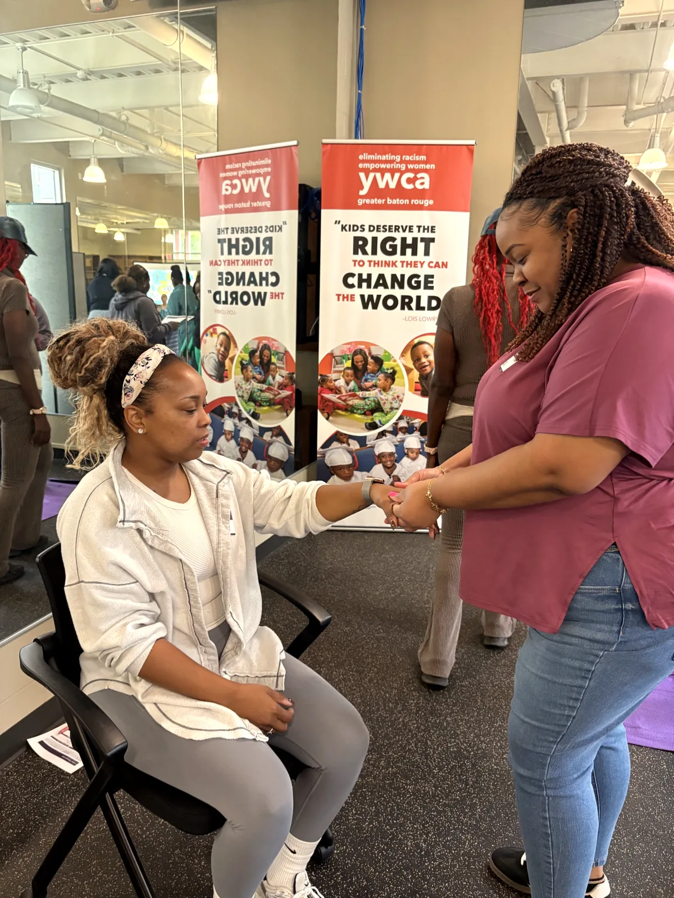
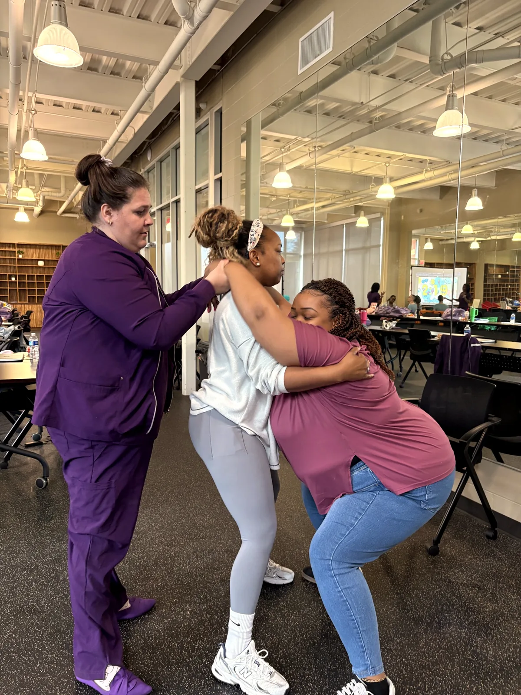

Now enrolling · Tau Cohort
Become a volunteer birth doula.
ICEA-approved training: four live evenings online plus one in-person Saturday in Baton Rouge. Scholarships funded by Louisiana Blue Foundation and Love One Louisiana Foundation.
We empower families, promote birth excellence, and bridge the health equity gap, matching Louisiana mothers with trained volunteer doulas at no cost.


In partnership with


Whether you are expecting, called to this work, or ready to fund it, there is a seat for you at the table.

Apply for a free volunteer doula to support you through labor, birth, and the first eight weeks postpartum. The application takes 15 minutes.
Start your application
Train with an ICEA-approved cohort and help change maternal health outcomes in your own community.
Apply to join the network
Every gift is tax-deductible and goes to a specific line item we can show you. Or sponsor our January 8 gala.
See ways to giveFor families served by Mary’s Hands Network, our IRB-tracked outcomes show what continuous, culturally humble support can do.
IRB Protocol #2025-001 with Baton Rouge General. Figures as of November 1, 2026.
A doula is a non-clinical support person who stays beside you during labor and the days afterward. Doulas don’t replace nurses, midwives, or doctors. They sit alongside the medical team so you have a steady hand, a familiar voice, and answers when you need them.

We doula like the original doula. Continuity, presence, showing up. That is the work.
Named for Mary of the Visitation, who traveled to the hill country to stay beside her cousin Elizabeth for three months. No advice, no intervention. Only presence.
Read our storyICEA-approved training: four live evenings online plus one in-person Saturday in Baton Rouge. Scholarships funded by Louisiana Blue Foundation and Love One Louisiana Foundation.
An evening in honor of the women of our community, and the people who have shown up for them. Title sponsor: My Bump Hub.
Every doula in our network trains alongside a cohort, then is certified to serve Louisiana families.


$500 funds one complete birth support. Every gift is tracked to a line item we can show you.
Every doula visit, training cohort, and birth are funded by donors like you. $500 funds a birth. $2,000 funds a training seat. Tax-deductible to the full extent of the law.